bag(x) = 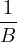∑
b=1B
bag(x) = 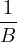∑
b=1B *b(x)
*b(x)Tree-based methods are a great way to learn patterns in data. They are extremely interpretable, making them a useful tool for communicating findings in data science applications. Moreover, there are extensions to simpler tree-based methods which are competitive in prediction accuracy. We will discuss some of these extensions, but first, let us start with the basics through an example.
Assume we are trying to predict the salary of a baseball player based on two characteristics: the number of years they played in the major leagues, and the number of hits they had last season. A possible tree that we might end up with can be seen in Figure 1. There are two places where the tree is split: Years<4.5 and Hits<117.5. These are the tree’s internal nodes, and we call the two split conditions Years<4.5 and Hits<117.5 the ’splitting rules’.
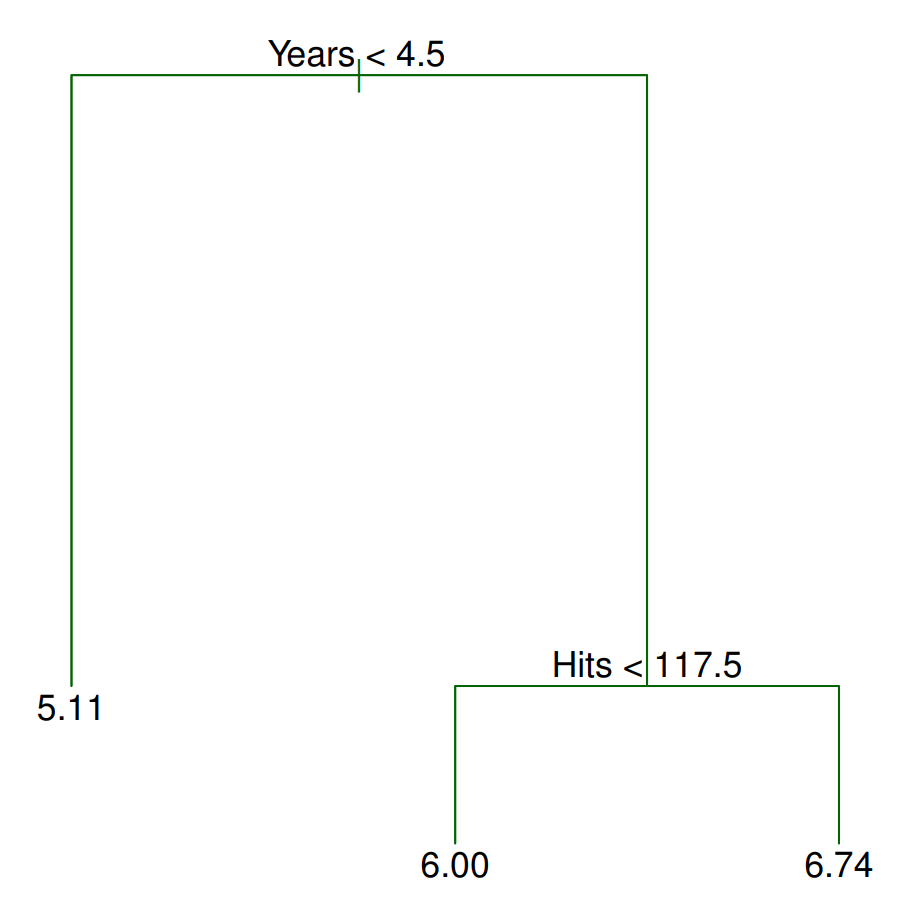
How exactly do we make a prediction given a new observation? Consider a player named Bob who has played 6 years in the major leagues and got 96 hits last season. According to the tree, the first split checks whether the number of years this player has played in the major leagues is less than 4.5. If it is less than 4.5, we travel to the left, otherwise, to the right (you can swap the right/left directions as long as it is consistent throughout the tree). Since Bob has played greater than 4.5 years, we travel to the right. Now we arrive at another ’splitting rule’ which asks if the number of hits this player got from last season is less than 117.5. Bob had 96 hits last season; thus, we travel to the left and get to the terminal or leaf node from which we make our prediction. In this case, we predict Bob to make e6 * 1000 ≈ 403,429 dollars.
Currently, we only discussed how to interpret a tree. Moreover, we have not talked about the differences between regression and classification trees. In order to elucidate what differentiates the two, we turn our attention to how a tree partitions the predictor space. Examining Figure 2, we see three regions annotated by R1,R2,R3 and observations within each denoted by yRi = {yi : yi ∈ Ri}. Each region corresponds to a terminal node in the tree. Herein lies the key difference between regression and classification trees: for regression trees, we take a quantitative statistic such as the mean of all data points within the region, whereas for classification trees, we take a statistic over qualitative data such as the mode. In contrast, for classification trees, we take a statistic for qualitative data such as the mode. For instance, a possible statistic for R1 could be the mean of all observations that lie in R1, 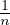 ∑ i=1n.
An important question to ask when building a tree is when to stop. Theoretically, the resulting tree can have a terminal node for every single data point in the entire training set and obtain 100% training accuracy; in this case, we will almost certainly be overfitting to the training set. Pruning is a technique that mitigates this problem by decreasing the number of terminal nodes by removing branches. Naturally, we should remove branches that do not increase the error rate by much. One method that accomplishes this is called cost complexity pruning. Cost complexity pruning assumes an augmented loss function,
| ∑ m=1|T|∑ xi∈Rm(yi -ŷRm)2 + α|T| |
where |T| is the number of terminal nodes in the tree, Rm is the region indexed by m, yi are the training observations, ŷRm is the estimate for region Rm and α is a non-negative tuning parameter. The additional α|T| term penalizes trees with many terminal nodes, meaning very deep trees will have a higher loss, making the algorithm prune branches. Since α is not fixed, it is typical to learn it using cross validation. A grid search is performed to identify values of α which result in trees with differing numbers of terminal nodes. Then, cross validation can be performed on each individual tree to determine the optimal tree. See Figure 3 for an example of pruning.
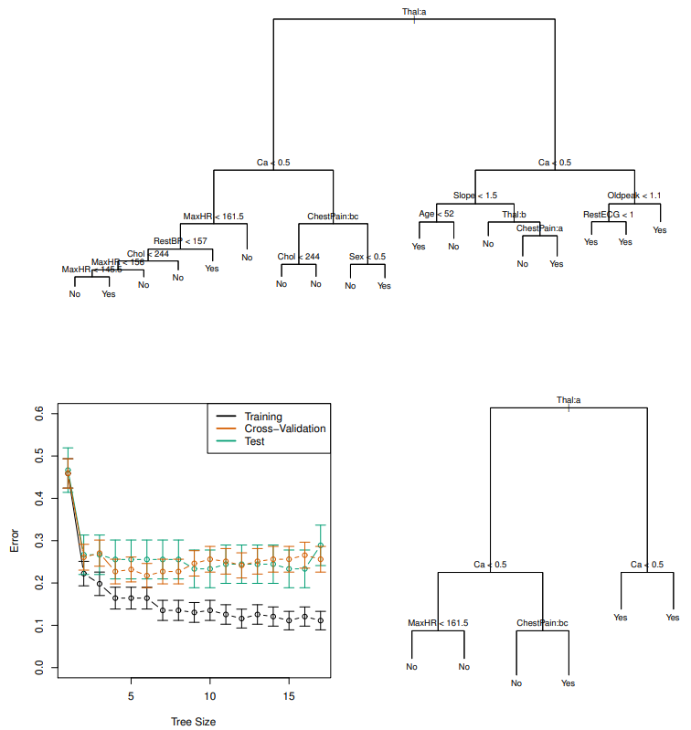
As mentioned in the beginning, trees can be easily interpreted. The split rules are simple to understand, and can reveal connections between individual predictors and the outcome. Furthermore, the way a tree makes predictions is thought to mirror human decision-making better than other methods. Trees can also be displayed graphically, making it a desirable option for presentations in real-world applications. Despite these advantages, trees suffer from lower prediction accuracy, high variance, and lack of robustness (a small change in the data leads to a big change in the resulting tree). In view of this, we shift our focus to some extensions to trees that tackle these limitations.
We discuss some extensions to traditional tree-methods. A graph comparing the accuracy of Boosting and Random Forests can be seen in Figure 4
As mentioned above, tree-methods suffer from high variance. In statistics, we know that averaging a set of observations reduces variance. Bagging leverages this fact by generating ‘additional’ datasets using bootstrapping and fitting an unpruned tree to each one (choosing not to prune is fine because we are reducing variance by fitting multiple trees). Therefore, if we use bootstrapping to obtain B training datasets and define 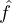 *b(x) to be the tree fitted to dataset b ∈ B, then our bagging estimate for a test case x will be the average over all estimates from each individual tree,
| bag(x) = 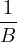∑
b=1B *b(x) |
A drawback of Bagging lies in the fact that each of the B trees are correlated. This is due to the fact that it is often the case that certain predictors are very effective, so many splits across trees will use the same predictor. This ultimately makes trees not completely independent, detracting from the goal of reducing variance. Random Forests decorrelates the trees by only considering a random fraction of predictors at each split (typically 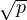 where p is the total number of predictors.
Boosting takes on a different flavor than Bagging and Random Forests. Rather than fit multiple trees on bootstrapped datasets, Boosting instead learns ‘slowly’ in an additive fashion. Specifically, given a current model, we fit a decision tree to the residuals. This way, each individual tree can be said to tackle a different part of the problem. Since each tree is not targeting the same thing, they are not correlated. Boosting uses hyperparameters λ, which controls the amount of contribution each individual tree has in the final prediction, and an integer value denoting the depth for each decision tree. See Algorithm 1 for a description.
 by adding in a shrunken version of the new tree:
by adding in a shrunken version of the new tree:  (x) ← (x) ← (x) + λ (x) + λ b(x) b(x) |
ri ← ri - λ b(x i) b(x i) |
consists of a series of splitting rules
terminology
terminal node/leaf : resulting regions due to splits in predictor space
internal node: points at which predictor space is split
branch: segments of tree that connect nodes
easy to interpret
goal is to find boxes R1,…,RJ that minimizes the RSS (residual sum of squares)
pruning: grow a very large tree then prune it back to obtain a subtree
cost complexity pruning (weakest link pruning): generate a sequence of successively smaller subtrees by increasing a nonnegative tuning parameter α until pruning lowers the loss function,
| ∑ m=1|T|∑ xi∈Rm(yi -ŷRm)2 + α|T| |
Each α corresponds to a different subtree. We learn which subtree and α is optimal through CV
same as regression tree, but different loss functions
Gini index
| G = ∑ k=1K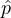 mk(1 -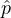 mk) |
Cross-entropy
| D = -∑ k=1K mk log mk |
both Gini index or cross-entropy are typically used for tree-growing because they measure node purity
sometimes a split does not reduce classification error (answer is the same for either split), but it does improve the node purity (Gini index and cross-entropy)
Pros:
Interpretable
Mirrors human decision-making better
Can be displayed graphically
Easily handle qualitative predictors without creating dummy variables
Cons:
Lower prediction accuracy
High variance
Non-robust; small change in data leads to big change in final estimated tree
Use bootstrapping to obtain B training datasets, train for each dataset to
obtain  *b(x) and average the predictions:
*b(x) and average the predictions:
 bag(x) = 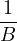∑
b=1B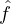 *b(x) bag(x) = 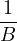∑
b=1B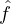 *b(x) |
Trees are not pruned
Out-of-bag Error Estimation: for each observation i, only use trees where this observation was not used (out-of-bag) in training to make the prediction and compute test error
Hard to interpret; can compute variable importance measures (the total amount that the RSS decreased due to splits over a certain predictor, averaged over all B trees)
Only consider a random fraction of predictors at each split (typically , where p is the total number of predictors)
Decorrelates trees, making the average less variable compared to Bagging
Learn slowly: given the current model, fit a decision tree to the residuals. Repeat in an additive manner.
Construction of each tree depends strongly on trees that are already grown